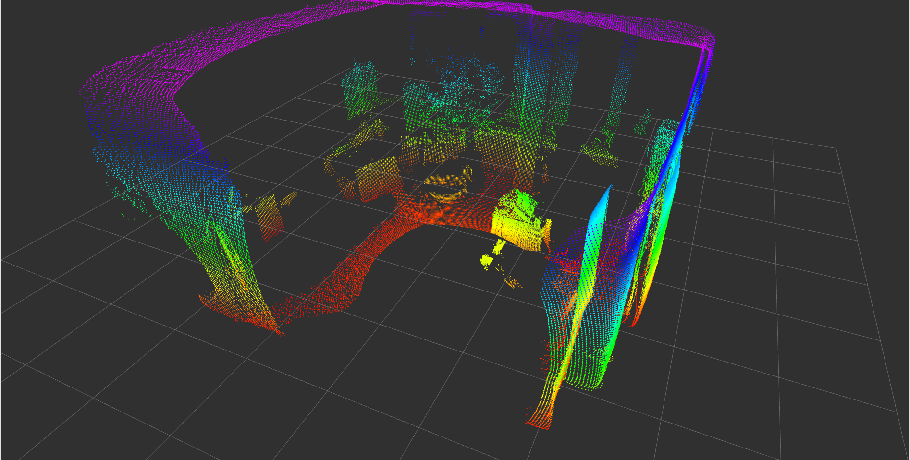

ifm3d-ros
This documentation is formatted to be read on www.ifm3d.com.
Note
The ifm3d-ros package has had major changes recently. Please be aware that this might cause problems on your system for building pipelines based on our old build instructions.
Compatibility Matrix
Warning
Note that the master branch is generally in a work in progress, and you probably want to use a tagged release version for production.
ifm3d-ros version |
ifm3d version |
embedded O3R FW version |
ROS distribution(s) |
|---|---|---|---|
1.1.2 |
1.3.3 |
1.0.14 |
ROS Noetic |
1.1.1 |
1.2.6 |
1.0.14 |
ROS Noetic |
1.1.0 (unreleased) |
1.2.3 |
1.0.x |
ROS Noetic |
1.0.1 |
0.93.0 |
0.14.23 |
ROS Noetic |
1.0.0 |
0.91.0 |
0.14.23 |
ROS Noetic |
Internal ifm3d-ros subpackage version structure
Please see the internal subpackage version structure for a known ifm3d-ros version.
ifm3d-ros version |
ifm3d_ros_driver |
ifm3d_ros_msgs |
ifm3d_ros_examples |
|---|---|---|---|
1.1.2 |
1.1.1 |
0.2.0 |
0.2.0 |
1.1.1 |
1.1.1 |
0.2.0 |
0.2.0 |
1.1.0 (unreleased) |
1.1.0 |
0.2.0 |
0.2.0 |
1.0.1 |
1.0.1 |
0.1.0 |
0.1.0 |
1.0.0 |
0.7.0 |
0.1.0 |
0.1.0 |
Changelogs
ifm3d-ros: For changes between on the ifm3d-ros node source code, please see the respective information in the CHANGELOG.
ifm3d: For changes between on the ifm3d API source code, please see the respective information in the ifm3d CHANGELOG.
O3R firmware: For changes between on the different FW versions, please see the respective information in the FW release notes.
ifm3d-ros for the O3R
ifm3d-ros is a wrapper around ifm3d enabling the usage of the O3R camera platform (ifm ToF cameras) from within ROS software systems. Please make sure to use version or above for O3R compatibility.

NOTE The confidence image handling inside the ifm3d API has changed which results in more valid pixels - for more information see the Release Notes
Organization of the software
The ifm3d-ros meta package provides three subpackages:
ifm3d_ros_driverprovides the core interface for receiving data for ifm 3d (O3R) cameras.ifm3d_ros_msgsgathers the ifm-specific messages types and the services for configuring and triggering the camera.ifm3d_ros_examplesprovides additional helper scripts and examples.
The name ifm3d-ros was kept even tough this is not consistent with ROS package naming conventions.
This ROS package has been split into three sub packages in an effort to facilitate dependency handling on distributed systems and simplify deployment on embedded platforms. For instance, the package ifm3d_ros_msgs can be installed independently of the other packages to control the camera from a separate computing platform. The ifm3d_ros_examples holds our launch files and examples.
Building and installing the software
LICENSE
Please see the file called LICENSE.